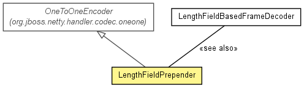

org.jboss.netty.handler.codec.frame
Class LengthFieldPrepender
java.lang.Object
 org.jboss.netty.handler.codec.oneone.OneToOneEncoder
org.jboss.netty.handler.codec.frame.LengthFieldPrepender
org.jboss.netty.handler.codec.oneone.OneToOneEncoder
org.jboss.netty.handler.codec.frame.LengthFieldPrepender
- All Implemented Interfaces:
- ChannelDownstreamHandler, ChannelHandler
@ChannelHandler.Sharable
public class LengthFieldPrepender
- extends OneToOneEncoder

An encoder that prepends the length of the message. The length value is
prepended as a binary form. It is encoded in either big endian or little
endian depending on the default ByteOrder of the current
ChannelBufferFactory.
For example, LengthFieldPrepender(2) will encode the
following 12-bytes string:
+----------------+
| "HELLO, WORLD" |
+----------------+
into the following:
+--------+----------------+
+ 0x000C | "HELLO, WORLD" |
+--------+----------------+
If you turned on the lengthIncludesLengthFieldLength flag in the
constructor, the encoded data would look like the following
(12 (original data) + 2 (prepended data) = 14 (0xE)):
+--------+----------------+
+ 0x000E | "HELLO, WORLD" |
+--------+----------------+
- Version:
- $Rev: 2121 $, $Date: 2010-02-02 09:38:07 +0900 (Tue, 02 Feb 2010) $
- Author:
- The Netty Project, Trustin Lee
| Methods inherited from class java.lang.Object |
clone, equals, finalize, getClass, hashCode, notify, notifyAll, toString, wait, wait, wait |
LengthFieldPrepender
public LengthFieldPrepender(int lengthFieldLength)
- Creates a new instance.
- Parameters:
lengthFieldLength - the length of the prepended length field.
Only 1, 2, 3, 4, and 8 are allowed.
- Throws:
IllegalArgumentException - if lengthFieldLength is not 1, 2, 3, 4, or 8
LengthFieldPrepender
public LengthFieldPrepender(int lengthFieldLength,
boolean lengthIncludesLengthFieldLength)
- Creates a new instance.
- Parameters:
lengthFieldLength - the length of the prepended length field.
Only 1, 2, 3, 4, and 8 are allowed.lengthIncludesLengthFieldLength - if true, the length of the prepended
length field is added to the value of the
prepended length field.
- Throws:
IllegalArgumentException - if lengthFieldLength is not 1, 2, 3, 4, or 8
encode
protected Object encode(ChannelHandlerContext ctx,
Channel channel,
Object msg)
throws Exception
- Description copied from class:
OneToOneEncoder
- Transforms the specified message into another message and return the
transformed message. Note that you can not return
null, unlike
you can in OneToOneDecoder.decode(ChannelHandlerContext, Channel, Object);
you must return something, at least ChannelBuffers.EMPTY_BUFFER.
- Specified by:
encode in class OneToOneEncoder
- Throws:
Exception
Copyright © 2008-2011 JBoss, a division of Red Hat, Inc.. All Rights Reserved.